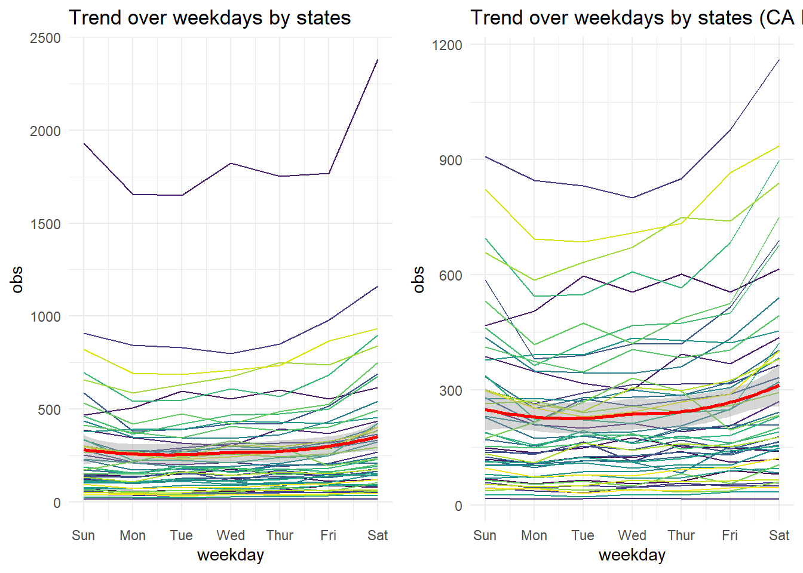
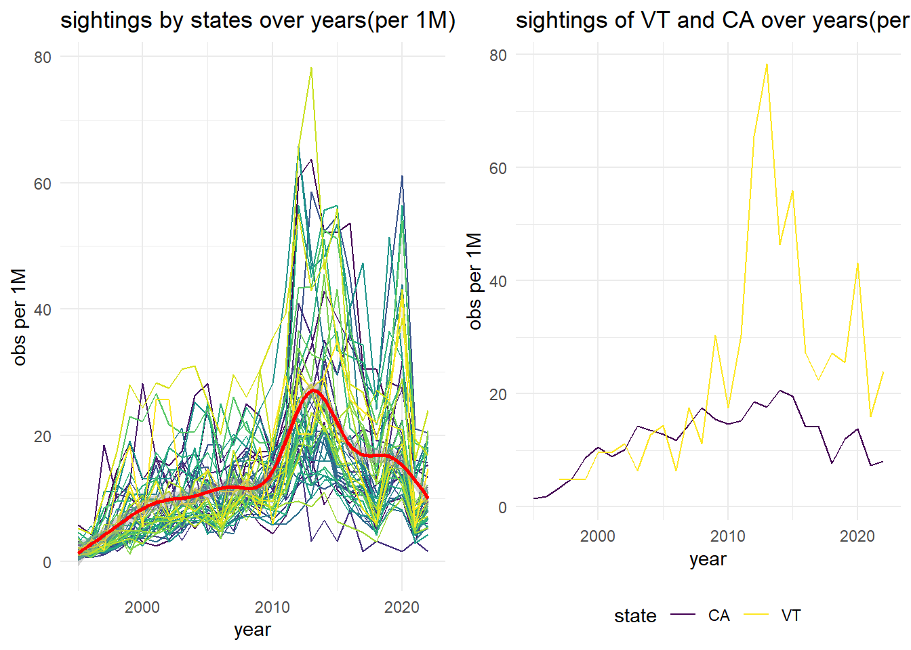

Trend Over Time
In this page, we are going to discuss the UFO sightings trend over time. First we will look into the pattern of sightings by states over years, months, weekdays and hours. To get rid off the population effect, we also calculate the sightings per 1 million of each states and then examine the trend over year and month. Then we will explore the sightings by shape over years.
library(tidyverse)
library(cowplot)## Warning: package 'cowplot' was built under R version 4.3.2theme_set(theme_minimal() + theme(legend.position = "bottom"))
options(
ggplot2.continuous.colour = "viridis",
ggplot2.continuous.fill = "viridis"
)
scale_colour_discrete = scale_colour_viridis_d
scale_fill_discrete = scale_fill_viridis_d
Sys.setlocale("LC_TIME", "en_US.UTF-8")## [1] "en_US.UTF-8"## read in census data for state and population
census <- read_csv("./data/us_census.csv")|>
rename(state = abbrv)|>
mutate(
state_pop = (census_2000+census_2010+census_2020)/3
)|>
select(state,state_pop)
## get state for 51 states
state_us <- census|>pull(state)|>unique()
## generate date information separately for latter trend analysis
ufo_trend <- read_csv("data/ufo_clean.csv")|>
filter(state %in% state_us)|>
mutate(
year = year(date_time),
month = month(date_time),
hour = hour(date_time),
weekday = factor(weekdays(date_time),
levels = c("Sunday",
"Monday",
"Tuesday" ,
"Wednesday",
"Thursday",
"Friday",
"Saturday"))
)Sightings trend over time by states
Trend over years by states
To look into the UFO sightings trend over years by states, here we take spaghetti plots to view the total sightings of each state throughout years.
## function to generate data for trend analysis
ufo_trend_var <- function(df,var1,var2){
tidy_data <- df |>
group_by(!!sym(var1), !!sym(var2))|>
summarise(
obs = n()
)|>
ungroup()
return(tidy_data)
}
ufo_trend_plot <- function(df,var_time,var_group){
trendplot <- df|>
ggplot(aes(x = !!sym(var_time), y = obs, color = !!sym(var_group)))+
geom_line()+
theme(legend.position = "none")+
geom_smooth(color = "red")
return(trendplot)
}
ufo_shape_plot <- function(df,var_time){
trendplot <- df|>
ggplot(aes(x = !!sym(var_time), y = obs, color = shape))+
geom_line()
return(trendplot)
}
ufo_per_trend <- function(df){
df_per_trend <- df|>
left_join(census,by = "state")|>
mutate(
obs = obs/state_pop*1000000
)
return(df_per_trend)
}ufo_year_trend <- ufo_trend_var(ufo_trend,var1="state",var2="year")
ufo_year_trend_plot <- ufo_trend_plot(ufo_year_trend,"year","state")+
labs(title = "Trend over years by states")
ufo_year_trend_plot_rm <-
ufo_year_trend |>
filter(!(state %in% c("CA")) )|>
ufo_trend_plot("year","state")+
labs(title = "Trend over years by states(CA Removed)")
plot_grid(ufo_year_trend_plot,ufo_year_trend_plot_rm)
From the plot of each state’s UFO sightings over year, we can see that:
- The total sightings of UFO across states went through a rapid increase right after 1995. This may result from the rapid development of Internet at the end of 20th century.
- Most states sightings peaked at around 2014 and then started to decline.
- There was a sharp decline of sightings at year 2018 for almost all states and then went through another sharp increase in 2019 and 2020.
- The sightings within one state varied largely from year to year with sharp increase or decrease.
- UFO reports in California was far more than other states in every year after 1995. This may due to the population effect.
To avoid the influence of the extreme large sightings of CA on the overall trend, we may filter out this state and see the overall trend then.
The overall sightings trend changed little compared to the previous one.
Trend over months by states
Then we group the original data by state and month to see if there if any trend throughout months.
ufo_month_trend <- ufo_trend_var(ufo_trend,var1="state",var2="month")
ufo_month_trend_plot <-
ufo_month_trend |>
ufo_trend_plot("month","state")+
scale_x_continuous(breaks = 1:12, labels = month.abb)+
scale_color_manual(name = "state", values = c("FL" = "orange","CA" = "blue","WA"="yellow")) +
theme(legend.position = "bottom")+
labs(title = "Trend over month by states")
ufo_month_trend_plot_rm <-
ufo_month_trend |>
filter(!(state %in% c("CA")))|>
ufo_trend_plot("month","state")+
scale_x_continuous(breaks = 1:12, labels = month.abb)+
scale_color_manual(name = "state", values = c("FL" = "orange","WA"="yellow")) +
theme(legend.position = "bottom")+
labs(title = "Trend over month by states(CA Removed)")
plot_grid(ufo_month_trend_plot,ufo_month_trend_plot_rm)
- The red smooth line indicating a trend of average UFO sightings in all states of each month.
- The sightings slightly went down from January to March, then increased and peaked around August, and declined till December.
- For most states, summer is when most UFO sightings were reported. However, there are some exceptions. UFO sightings in state Florida peaked at December, as shown by the orange line in the plot.
- The sightings in Washington aggregately went through the most rapid increase started from May and then a rapid decrease right after Jul. WA state has the high range of sightings by month.
Like what we did in the year trend, we want to reduce the impact of outlier. Therefore, we remove sightings of California. The trend is more clear that sightings in most states peaked at July and then declined and reached the lowest at around February.
Trend over hours by states
ufo_hour_trend <- ufo_trend_var(ufo_trend,var1="state",var2="hour")
ufo_hour_trend_plot <-
ufo_hour_trend |>
ufo_trend_plot("hour","state")+
labs(title = "Trend over hours by states")
ufo_hour_trend_plot_rm <-
ufo_hour_trend |>
filter(!(state %in% c("CA")) )|>
ufo_trend_plot("hour","state")+
labs(title = "Trend over hours by states(CA Removed)")
plot_grid(ufo_hour_trend_plot,ufo_hour_trend_plot_rm)
- The average sightings during 6:00 to 15:00 were relatively low.
- There was an sharp increase of average sightings starting from 15:00 and peaked at around 21:00.
- The average sightings started to decline slowly after 21:00.
- People tends to observed UFO during evening than daytime.
After removing the outlier of California state, the trend is more clear.
Trend over weekdays by states
ufo_weekday_trend <- ufo_trend_var(ufo_trend,var1="state",var2="weekday")
ufo_weekday_plot <- ufo_weekday_trend |>
mutate(
weekday = as.numeric(weekday)
)|>
ufo_trend_plot("weekday","state")+
scale_x_continuous(breaks = 1:7, labels = c("Sun","Mon","Tue","Wed","Thur","Fri","Sat"))+
labs(
title = "Trend over weekdays by states"
)
ufo_weekday_plot_rm<-
ufo_weekday_trend |>
filter(!(state %in% c("CA")) )|>
mutate(
weekday = as.numeric(weekday)
)|>
ufo_trend_plot("weekday","state")+
scale_x_continuous(breaks = 1:7, labels = c("Sun","Mon","Tue","Wed","Thur","Fri","Sat"))+
labs(title = "Trend over weekdays by states (CA Removed)")
plot_grid(ufo_weekday_plot,ufo_weekday_plot_rm)
The overall trend for all states is not clear. For California,the sightings declined from Sunday to Monday, then increased during weekdays and peaked at Saturday.
We may remove state California to check the overall trend again.
Now we may notice a trend showed by the red smooth line that the average sightings went through an slow increase started Monday through Friday and peaked at Saturday, then reduced during Sunday.
To make this statement clearer, we can view the bar plot of the sightings over weekdays.
ufo_weekday_trend |>
mutate(
weekday = as.numeric(weekday)
)|>
ggplot(aes(x = weekday, y = obs))+
geom_col()+
scale_x_continuous(breaks = 1:7, labels = c("Sun","Mon","Tue","Wed","Thur","Fri","Sat"))+
labs(
title = "Bar plot of sightings trend of states over weekdays"
)The bar plot visualized the trend more clear. The overall sightings decreased from Sunday to Monday, then increased day by day and reached the highest values at Saturday.
Sightings trend per 1M population over time by state
In the previous part of this page, we discuss about the population effect on the overall trend over year. Here, we take the average of population of 2000,2010,2020 of each state, and use this average population to calculate the sightings per one million from 1995 to 2022 to get rid of the population effect, then we examine the average trend over time. We mainly discuss the trend of sightings per 1 million population over year and month here.
Trend per 1M population over year by state
ufo_per <- ufo_trend|>
filter(
year >= 1995
)
ufo_year_per <- ufo_trend_var(ufo_per,"state","year")|>
ufo_per_trend()
ufo_year_per_plot <- ufo_year_per|>
ufo_trend_plot("year","state")+
labs(
title = "sightings by states over years(per 1M)",
y = "obs per 1M" )
ufo_year_per_plot_spec <- ufo_year_per|>
filter(state %in% c("VT","CA"))|>
ggplot(aes(y = obs,x = year, color = state))+
geom_line()+
labs(title = "sightings of VT and CA over years(per 1M)",
y = "obs per 1M")
plot_grid(ufo_year_per_plot,ufo_year_per_plot_spec)
- For sightings per 1M population, the trend looks a slightly different from the aggregate sightings trend.
- We can still see the fast increase right after 1995, but the increase rate after 2002 is relatively slow.
- There is a rapid increase after 2008 and then peaked at 2014, then decreased till around 2017.
- The sightings remained stable for a short period after 2017 then decreased to a relatively low level.
- The state with most sightings per 1M is Vermont. After taking population into account, the sightings in California varied in an average pace.
Trend per 1M population over month by state
ufo_month_per <- ufo_trend_var(ufo_per,"state","month")|>
ufo_per_trend()
ufo_month_per_plot <- ufo_month_per|>
ufo_trend_plot("month","state")+
scale_x_continuous(breaks = 1:12, labels = month.abb)+
labs(
title = "sightings over months(per 1M)",
y = "obs per 1M" )
ufo_month_per_plot_spec <- ufo_month_per|>
filter(state %in% c("CA","FL","AK"))|>
ggplot(aes(y = obs,x = month, color = state))+
geom_line()+
scale_x_continuous(breaks = 1:12, labels = month.abb)+
labs(title = "sightings over months of3 states(per 1M)",
y = "obs per 1M")
plot_grid(ufo_month_per_plot,ufo_month_per_plot_spec)
- The sightings trend over month change little after adjusting for population.
- However, there were some certain states that went against the average trend. State Alaska had the most sightings per 1M in winter and the lowest sightings in summer. This may due to the polar night in winter.
- Also, we can see that the change rate of California over months was relatively stable.
Sightings trend over time by shape
Trend over year by shape
obs_shape <- ufo_trend |>
group_by(shape)|>
summarise(
obs = n()
)|>
arrange(desc(obs))|>
ungroup()
shape10 <- obs_shape |>
head(10)|>
pull(shape)
ufo_shape <- ufo_trend|>
filter(shape %in% shape10)In total there are 23 shape categories in the original dataset. Here we extract the most observed 10 shapes to see the trend over year.
ufo_year_shape <- ufo_trend_var(ufo_shape,var1="shape",var2="year")
ufo_year_shape |>
mutate(
shape = factor(shape,levels = shape10)
)|>
ggplot(aes(x = year, y = obs))+
geom_line()+
facet_grid(cols = vars(shape))+
theme(axis.text.x = element_text(angle = 90, hjust = 1))+
labs(title = "Spaghetti plot of sightings trend of states over years")
For most observed shapes, they have similar trend over year: the sightings started to increase rapidly in 1990s and, then peaked at around 2014, followed by an sharp decrease in 2018 and another peak in 2020.
Light, circle and triangle were the most observed shape of UFO. The light shape had the most sharp change rate of all shapes.
However, trends of some shapes had different characteristics.
As for fireball, there was a peak before 2000 and a
relatively slow increase rate after that compared to others
As for disk, this is a traditional shape that comes to
people’s mind when talking about UFO. The sightings of disk went through
an increase in 1970s right after the foundation of NUFORC. And the
increase rate of disk sightings after 1990s was relatively low. The
highest value of sightings in one year of was never over 250. (We might
consider not taking disk as a classic shape of UFO.)